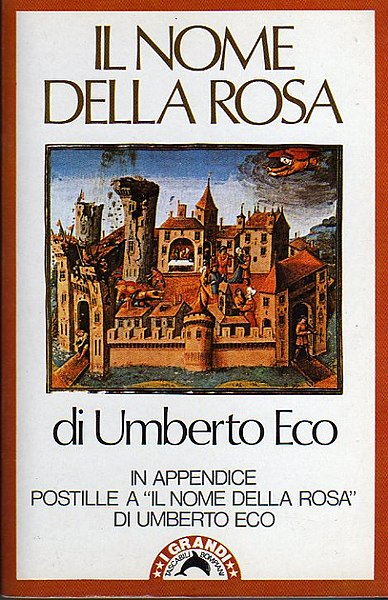

Имя Розы
«Имя Розы» - роман итальянского писателя, профессора семиотики Болонского университета Умберто ЭкоНаписан на итальянском языке. Роман впервые опубликован в 1980 году в издательстве Bompiani. В 1983 Умберто Эко написал эссе «Заметки на полях "Имени розы"» (итал. Postille al nome della rosa), в котором дал толкование своего романа.
Сюжет
Введение
Главным героям, монаху-францисканцу Вильгельму Баскервильскому и его спутнику и ученику, юному августинцу А́дсону Мелькскому приходится расследовать гибель некоего Адельма Отрантского, монаха уединённого бенедиктинского монастыря. Действие происходит в конце ноября 1327 года в неназванной местности, с туманным указанием на границу Лигурии, Пьемонта и Франции, то есть на северо-западе Италии. Действие романа разворачивается в течение одной недели. Вильгельм, чьей первоначальной целью было подготовить встречу между теологами папы Иоанна XXII и императора Людовика IV Баварского, теперь должен подтвердить свою репутацию учёного мужа и в прошлом знаменитого инквизитора.
Основные собыбытия
Библиотека
Настоятель монастыря Аббон безосновательно не допускает героев в библиотеку, между тем есть версия, что Адельм, первый погибший, выпал именно из окна книгохранилища. Библиотека представляет собой лабиринт, расположенный на третьем этаже Хрáмины — башни, поражающей Адсона своими размерами, великолепием и символичностью архитектурной формы. На втором этаже находится скрипторий, в котором монахи переписывают рукописи. Тут столкнулись две монастырские партии — итальянцы и иностранцы. Первые ратуют за свободный доступ ко всем книгам, за работу с народным языком, вторые же — консерваторы — получили руководящие места (немец Малахия Хильдесхаймский — библиотекарь, его помощник — англичанин Беренгар Арундельский и «серый кардинал» испанец Хорхе Бургосский) и поэтому не разделяют стремлений итальянцев. Чтобы уяснить причину происходящего, ночью Вильгельм и Адсон тайно проникают в библиотеку. Герои плутают, встречают призраков, на поверку оказавшихся ловушками, ухищрением человеческого разума. Первая вылазка ничего не дала: с трудом выбравшись из лабиринта, Вильгельм и Адсон сомневаются в собственных силах и решают раскрыть загадку лабиринта «снаружи».
Nomen nudum
В следующую ночь Адсон самостоятельно, движимый душевным возбуждением, проникает в библиотеку, благополучно спускается на первый этаж (где находится кухня) и встречает там девушку, которая отдавалась келарю за еду. С ней у Адсона происходит связь, предосудительная для послушника.
Впоследствии он осознаёт, что, потеряв свою возлюбленную, он лишён даже последнего утешения — плакать, произнося её имя. Вероятно, этот эпизод прямо связан с названием романа (согласно другой версии, название отсылает к риторическому вопросу в споре реалистов с номиналистами — «Что остаётся от имени розы, после того как исчезнет роза?»).
Диспут о бедности Христа
Затем в обитель собираются представители императора — в основном францисканцы (как и брат Вильгельм) во главе с генералом ордена Михаилом Цезенским, и посольство папы во главе с инквизитором Бернардом Ги и поджеттским кардиналом. Официальной целью встречи является обсуждение условий, на которых Михаил Цезенский сможет прибыть в Авиньон к папе Иоанну для дачи объяснений. Папа считает ересью провозглашённую Перуджийским капитулом ордена францисканцев доктрину о том, что Христос и апостолы не имели никакой собственности, в то время как император — противник папы — поддержал решения капитула. Диспут о бедности Христа является только формальным поводом, за которым скрывается напряжённая политическая интрига. По словам Вильгельма, «…вопрос не в том, был ли Христос беден, а в том, должна ли быть бедной церковь. А бедность применительно к церкви не означает — владеть ли ей каким-либо добром или нет. Вопрос в другом: вправе ли она диктовать свою волю земным владыкам?» Михаил искренне ищет примирения, но Вильгельм с самого начала не верит в успех встречи, что впоследствии полностью подтверждается. Для делегации папы, и в особенности для Бернарда Ги (или Гвидони, как зовут его итальянцы) нужен лишь повод, чтобы подтвердить справедливость обвинений францисканцев-миноритов в ереси. Этим поводом становится допрос келаря Ремигия Варагинского и Сальватора, бывших в своё время еретиками-дольчинианами. Вильгельм не смог найти убийцу, и французские лучники, подчинённые Бернарду, берут монастырь под свой контроль (ненайденный убийца представляет опасность для посольств).
Вильгельм и Адсон вновь проникают в библиотеку, открывают в хаосе комнат систему и находят зеркало — вход в «предел Африки», куда ведут все следы книги — причины всех преступлений. Дверь не открылась, и при возвращении в кельи герои становятся свидетелями поимки Бернардом Ги «виновных» — приготовившегося к любовному колдовству монаха Сальватора и девушки, бывшей с Адсоном. На следующий день происходят прения между посольствами, в итоге Бернард использует Сальватора и его товарища келаря Ремигия как оружие против францисканцев. Под давлением инквизитора они подтверждают, что они некогда принадлежали к миноритам, а потом оказались в секте Дольчина, исповедовавшей схожие с миноритскими воззрения на бедность Христа и воевавшей против властей, затем предали свою секту и оказались, «очистившись», в этом монастыре. Открывается, что Ремигий имел при себе письма еретика Дольчина сторонникам и что эти письма он попросил сохранить библиотекаря Малахию, который, не зная их содержания, прячет их в библиотеке, а потом выдаёт Бернарду Ги. Под страхом пыток Ремигий признает себя виновным в убийствах, произошедших ранее в монастыре, и объясняет их своей связью с дьяволом. Таким образом получается, что в аббатстве много лет живёт еретик-дольчинианин, одержимый дьяволом убийца, а в библиотеке хранились письма ересиарха Дольчина. В результате авторитет монастыря подорван, а переговоры прерваны. Наступает шестой и последний день, посольства отъезжают, но до того становятся свидетелями очередной таинственной смерти — библиотекаря Малахии. Вильгельм просит аудиенции у Аббата, в конце которой Аббон предлагает ему покинуть монастырь к утру. К вечерне не является и сам настоятель, и в возникшем смятении Вильгельм и Адсон возвращаются в библиотеку, находят ключ и проникают в «предел Африки»
Мировой пожар
В «пределе Африки» они обнаруживают слепца Хорхе, сидящего за столом с книгой в руках — единственным сохранившимся в мире экземпляром второй книги «Поэтики» Аристотеля. Происходит спор, в ходе которого слепой аргументирует необходимость сокрытия этого творения величайшего из философов, а Вильгельм — необходимость его открытия миру. Хорхе Бургосский видит в этой книге главного своего врага, так как в ней безупречно доказана необходимость смеха. (Главный довод слепца: Иисус никогда не смеялся). Старец отрывает страницу, пропитанную ядом, и начинает её есть, тушит свет (в «пределе Африки» нет окон), следует погоня по книгохранилищу, затем он на глазах у Вильгельма и Адсона «доедает» том, вырывает у героев лампу и, опрокинув масляную лампу, поджигает библиотеку. Она горит, за ней занимается вся Храмина, огонь перекидывается на остальные строения. Все старания потушить огонь тщетны. Адсону на ум приходит образ из жития святого Августина — мальчик, ложкой вычерпывающий море.
Эпилог
Адсон и Вильгельм покидают пепелище и вскоре расстаются навсегда. Спустя годы, будучи в зрелом возрасте, Адсон возвращается на то место, где когда-то был монастырь, и собирает лоскутки чудом сохранившихся страниц. А в старости, уже готовясь к встрече с Богом, он дописывает свои воспоминания.
Роман демонстрирует схоластический метод, который был очень популярен в XIV веке, а Вильгельм олицетворяет мощь дедуктивного рассуждения.
В результате разгадка центральной тайны (убийства) оказалась связанной с содержанием таинственной книги — второй части «Поэтики» Аристотеля (посвящённой комедии), единственный экземпляр которой сохранился в монастырской библиотеке.
Заключительная фраза
Роман заканчивается многозначительными стихами
В статье «Заглавие и смысл», представленной как реакция на читательские письма с просьбой объяснить смысл заключительных стихов и их связь с названием книги, Эко сообщает, что цитирует эти стихи из сатирической поэмы Бернарда Клюнийского (он же Бернард Морланский, первая половина XII века) De contemptu mundi. Цитата (Lib. I, 952) соответствует традиционным изданиям этого произведения, начиная с его первой печатной публикации в 1557 году в сборнике сатиры, критикующей католическую церковь «Varia doctorum piorumque virorum de corrupto Ecclesiae statu poemata».
В опубликованной в 1991 году редакции Рональда Пепина слово «rosa» (роза) было заменено на Roma (Рим), что соответствует контексту предшествующих строк.
Современные электронно опубликованные тексты могут следовать новой редакции, хотя замена «rosa» на «Roma» критикуется как неоправданная вследствие того, что долгое «о» в слове Roma не укладывается в безупречный метр поэмы.
В своей лекции «Автор и его толкователи» в 1996 году Эко упоминает об этом варианте, который на момент написания романа не был ему известен, ещё раз объясняя, что единственного правильного понимания заглавия, как такового, нет:
Автор, назвавший свою книгу «Имя Розы», должен быть готов ко всевозможным толкованиям своего заглавия. Как эмпирический автор, я писал, что выбрал название, чтобы освободить читателя: «роза — фигура настолько богатая значениями, что от неё едва ли остался какой-либо смысл <…>» Более того, кто-то обнаружил, что в некоторых ранних манускриптах «De contemptu mundi» Бернарда Морланского, из которого я позаимствовал гекзаметр «stat rosa pristina nomine, nomina nuda tenemus», пишется «stat Roma pristina nomine» — что, в конце концов, лучше согласуется со всей поэмой, говорящей о потерянном Вавилоне. Таким образом, название моего романа, попадись мне другой вариант поэмы, могло бы быть «Имя Рима» (приобретая таким образом фашистские отголоски).Но в тексте говорится «Имя Розы», и я понимаю теперь, как трудно было остановить бесконечную серию ассоциаций, этим словом вызываемых. Вероятно, я хотел открыть возможные прочтения настолько, чтобы сделать каждое из них несущественным, и в результате породил неистощимый источник толкований. Но текст есть как есть, и эмпирический автор должен молчать.